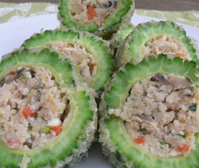

にがうりの卯の花ロールフライ
- 調理時間：40 分
- （一人当たり）
- カロリー：408kcal
- たんぱく質：6.7g
- 脂質：26.3g
- 塩分：1.6g


＜４人分＞
- にがうり
- １本
- おから
- １５０ｇ
- ニンジン
- ５０ｇ
- 干しシイタケ
- ３枚
- 青ネギ
- ３本
- パン粉
- 適量
- サラダ油
- 適量
Ａ
- ・だし汁
- ２００ｍｌ
- ・酒
- 大さじ１
- ・みりん
- 大さじ１～２
- ・醤油
- 大さじ１
- ・塩
- 少々
- Ｂ
- ・小麦粉
- ８０ｇ
- ・水
- １４０ｍｌ


-
＜卯の花を作る。＞※卯の花は市販品でも良いでしょう。
干しシイタケは水につけて戻し、細切りにする。ニンジンは粗めのみじん切りにし、青ネギは小口切りにする。鍋にサラダ油を熱し、干しシイタケとニンジンを入れて炒め、塩（分量外）少々を加える。
Ａを加え、中火で煮て、ニンジンがやわらかくなったらおからを加えて、水分をとばすように炒め煮し、仕上げに青ネギを加え混ぜる。 - にがうりはボート状になるように半分に切り、種を全て取り除き、分量外の塩コショウを振っておく。
- 切り目に小麦粉（分量外）を振った②のにがうり半分に卯の花を山盛りにのせ、残り半分でフタをする。
- ボウルにＢの小麦粉と水を合わせて衣を作り、②のにがうり全体にまぶし、パン粉をつける。
- フライパンに多めの油を入れて、にがうりを転がしながら、揚げ焼きする。
全体に火が通ったら、火を止め、食べやすい大きさに切り分け、器に盛り付ける。
にがうりの卯の花ロールフライ
にがうりは、別名｢涼瓜｣とも呼ばれています。カリウムが多く、体の熱を取り去るので、夏に食べたい野菜のひとつ。最近では全国のスーパーで見られるようになりましたが、もともとは沖縄料理には欠かせない食材です。
にがうりの注目すべき成分は、カロテンとビタミンC。中でもビタミンC は、レモンの３倍で、ゴーヤチャンプルーのように油で炒めても、ほとんど壊れないことが特徴です。また、にがうりには血糖値を下げるはたらきがあるともいわれ、研究がすすめられています。
この時期は、夏本番に備え、体力と持久力を落とさないように食べることが大切です。たんぱく質も、動物性と植物性の双方をバランスよく取り入れましょう。おからは、食物繊維や鉄分も多い優秀なたんぱく源。近年は、食卓にあがる頻度も少ないようですが、生活習慣病予防にも効果を発揮する優良食品ですから意識して利用したいですね。